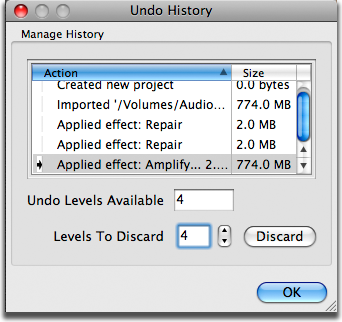
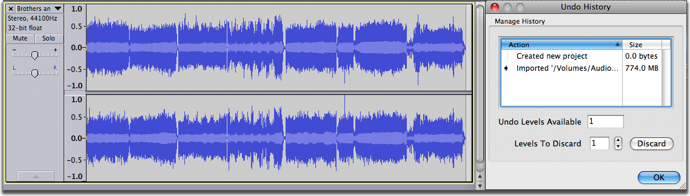
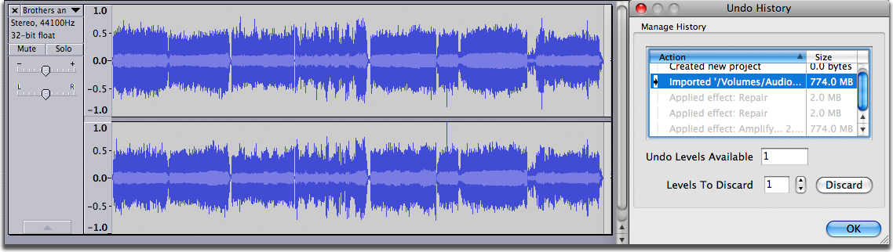
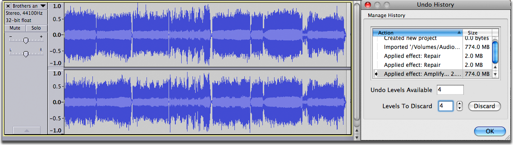
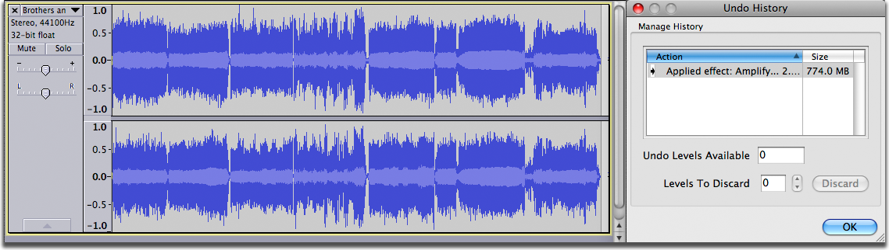

Undo, Redo and History
From Audacity Manual
Undo and Redo
Audacity is a forgiving program. If you're afraid of messing up, you can relax, because Audacity is designed to let you try something and then undo it if you don't like it. This is really the only way to work with audio because it can be so unpredictable. It's hard to imagine what it would sound like to mix two sounds together until you do it, so it is useful to have a way to "undo".
Audacity has unlimited undo back to the last time you opened a project or audio file. That means you can make a hundred changes, then change your mind and undo them all. Undo and redo are very fast, so even if you applied an effect that took five minutes, undoing it will take just a second or two, and just a second to redo as well. Use it to listen to "before" and "after" versions of a project.
There are four ways to Undo or Redo:
- The options in the "Edit" menu
- Two buttons in the Edit Toolbar:
 Undo and
Undo and  Redo
Redo
- Select "History..." from the View menu and click on an action
- Use the Keyboard shortcuts:
{kind=link}
Only changes that modify the project can be undone. Changes that cannot be undone include:
- Saving or exporting
- Changing the selection (the selection is saved with the action)
Once you undo, if you then choose a new action, you've lost the original path; you can't undo the undo! Here's another way to look at it - suppose you made ten edits, numbered 1 through 10. Now you undo your way back to step 5, and then perform a new edit, which we'll call 6b because it's different from the original 6. At this point you can undo back to step 5 or all the way back to 1, but you can't get back to the original 6 through 10 anymore. Once you make a change in step 5, you lose whatever edits you had made after that step.
Saving does not erase your undo history, closing a project does; only the last saved version is remembered, you can't save multiple versions all at once.
History Window
The Undo History lets you view and manage all of the actions you've taken since you opened a project. You can open it by selecting
- 
- History list: This shows a list of all the editing actions that have taken place in the project since it was opened or created. Next to each action in the History list is a number telling you how much disk space is used to store the undo information for that action.
- Click on an action in the history list to Undo or Redo back to that action. It's the same as choosing or multiple times.
- Undo Levels Available: This displays how many actions are available to Undo. It changes depending on the highlighted line in the history list. You cannot edit this value.
- Levels to Discard: Indicates the number of Undo levels that will be discarded from the top of the history list when you click the Discard button.
- Discard: Removes the number of actions specified in the Levels to Discard text box. This action is immediate and cannot be undone. Discarding undo levels will free up the disk space taken by the undo information associated with those actions.
- OK: Accepts the changes made in the Undo History window and closes the window.
Example of Use of the History Window
In the image below we see the Undo History window positioned beside a stereo file that has been imported into a project. The file size was 774 MB, and at the moment that amount of space is taken up on the hard drive for the Undo information.
- 
In the next image the user has performed a number of editing actions: she has repaired two clicks and amplified the entire track. The "repair" steps required only 2 MB each of hard disk space to store the Undo information but the "Amplify" step has required an additional 774 MB of hard disk space.
- 
Here we see how the user could quickly undo the "Amplify" step and the two "Repair" steps, returning to the project to the state it was in immediately after the file was imported. This is equivalent to selecting three times.
Note that the project reflects the change selected in the Undo History window: the amplification has been removed and the clicks are back.
The user may decide that everything done up to this point is perfect. In order to save hard disk space she could Discard unneeded Undo levels. In the image below she has chosen to discard 4 undo levels.
- 
After clicking the Discard button 4 Undo levels are discarded starting from the top of the "Manage History" list. 778 MB of disk space has been saved.
- 
Note the difference between Undo and Discard
- Undo removes steps from the bottom of the Undo History list.
- When you Undo, you still have the option to Redo (as shown by the gray list items in the third image above) until you perform another editing action, at which point you will lose the ability to Redo.
- Discard removes steps from the top of the Undo History list. This action is immediate and cannot be Undone.
- Note that the Undo information is removed and the hard disk space it uses is freed up when you close an Audacity project. Thus you should only need to discard Undo levels if you are working on a very large project and are running short of hard disk space.